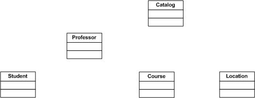
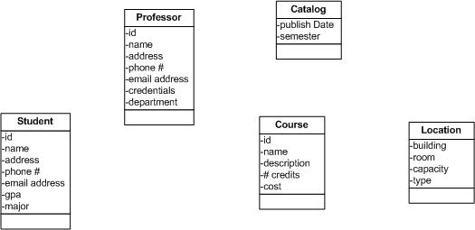
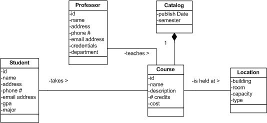
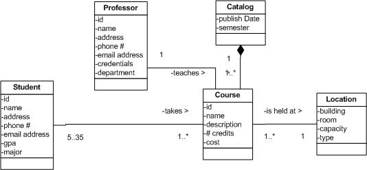
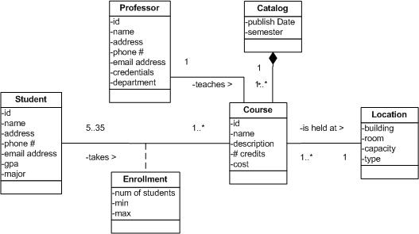
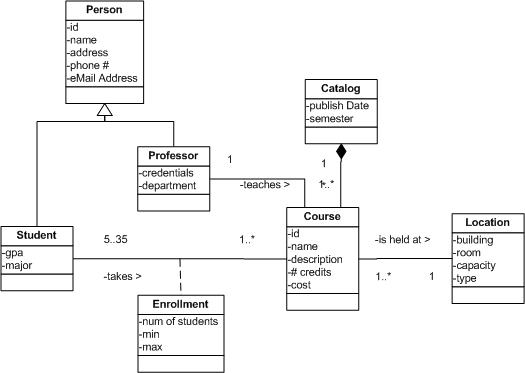

OUM |
Task Overview |
||
Method Navigation |
Current Page Navigation |
||
|
|
||||||||
The purpose of this task is to identify and analyze the data elements required to support the functional requirements that have been documented in the use cases contained in the use case package. You describe how the data will be organized, structured, and represented for the project.
This task may be done in parallel with Analyze Behavior (AN.060) and Analyze User Interface (AN.090) and is performed for every use case package documented in the Package Diagram in the Architecture Description (RD.130).
To accomplish this task, you analyze the Use Case Specification (RA.024) for each use case in the package to understand the entities (classes), attributes, associations, aggregations, multiplicity, and generalizations that will be required. Each data element may also be described in the Glossary (RD.042).
The standard and recommended approach and notation for completing this task is to use a UML class diagram with class names and attributes (only). This task may also be accomplished using a non-UML approach that uses other notational or textual techniques including entity-relationship diagrams (ERDs) or data tables. An example data table is included at the end of the Approach section in this guideline. A data table, or a portion of an ER diagram inserted into an Analysis Specification will suffice for minor data changes.
If your project is using a UML approach, you should update the Domain Model (RD.065) with this additional information or create a UML class diagram if no Domain Model is available. This class diagram will also be updated in Analyze Behavior (AN.060) task to include the required operations and other behavior information. This will result in an Analysis Class Diagram for the Use Case Package.
In a commercial off-the-shelf (COTS) application implementation, this task is generally performed only when there is a need to gain further clarification of the business requirements represented in the use cases. This typically applies to those requirements that can only be satisfied through custom-built components, which extend the functionality of the COTS system and/or integrate the COTS system with other COTS or legacy systems.
B.ACT.AE Analyze - Elaboration
C.ACT.AC Analyze - Construction
Data Analysis
The resulting work product of the Data Analysis is an Analysis Class Diagram. This Analysis Class Diagram is also updated by the Behavior Analysis (AN.060). The Data Analysis adds the entities (classes), attributes, associations, aggregation, multiplicity and generalizations required to support the Use Case Package.
To accomplish this you may update the Domain Model (RD.065) to capture the results of analyzing the data requirements of the Use Case Package. If no Domain Model is available, develop a UML class diagram to support each Use Case Package.
If desired, the Data Analysis (AN.050), Behavior Analysis (AN.060), and Interface Analysis (AN.090) may be organized into an Analysis Specification (AN.100) for each Use Case Package identified in the Package Diagram contained in the Architecture Description (RD.130).
You should also update the Glossary (RD.042) to define the majority of data elements.
You should follow these steps:
No. |
Task Step | Component | Component Description |
|---|---|---|---|
1 |
Identify classes (or entities). | Class Diagram | Review each use case and search for the nouns that represent entities or classes. Verify they exist on the Domain Model or add them if they are missing. |
2 |
Identify attributes. | Class Diagram | Review each use case and search for the nouns that my represent attributes which belong to the classes on the Domain Model. |
3 |
Identify associations and aggregation relationships. | Class Diagram | Review each use case and search for the verbs that could indicate associations on the Domain Model. |
4 |
Identify multiplicity. | Class Diagram | Review each use case and search for business rules that indicate the multiplicity between entities (or classes) and add them to the Domain Model. |
5 |
Identify association classes. | Class Diagram | Identify association classes that will better define the relationships between domain classes. |
6 |
Simplify the model using generalization. | Class Diagram | Look for opportunities to extract redundant attributes from similar entities (or classes) and combine them into a “superclass.” |
7 |
Update the Glossary (RD.042) | Glossary | The Glossary is updated to reflect any new terms identified in the Domain Model. |
The goal of this task is to identify and verify that all entities, attributes, and their relationships are fully identified and placed on a Domain Model or in a Data Table. Additionally, the Glossary (RD.042) is updated to reflect the definition of any new terms identified when analyzing this data. This process is iterative and can be accomplished throughout the Inception and Elaboration phases of a project. The above seven (7) steps are explained below using an example from a University Registration System.
While reviewing each use case underline the nouns that may correspond to a class on the Domain Model. Verify that these classes exist, or add them to the model. Make certain the names of each class are written in singular format using the terminology of the business.

Review each of the use cases and identify the nouns that represent attributes and place them on the Domain Model in the appropriate classes. These attributes should describe a data element (or field) of the class.

Review each of the use cases and identify the verbs that represent associations and/or aggregations between the Domain Classes and draw them on the diagram. Indicate the name of the association on the line and show the direction of readability by using a directional arrow next to the verb.

Determine the correct multiplicity for each side of the association and draw it on the diagram.

Determine which associations should contain an association class to help better define the relationships between the domain classes. Give this association class a name that relates to the business terminology.

Review the Domain Model and look for opportunities to extract redundant attributes from entity classes and move them into a superclass. Do not repeat the same attributes on the subclasses.

Review the Glossary (RD.042) and add or update any term that needs clarification. The Glossary needs to reflect the definition of each term used on the Domain Model.
NOTE: It is not necessary to use the Domain Model to capture the data and their relationships for a project. If you are unfamiliar with the UML Class Diagram (shown above) then data can be captured using a traditional data model (entity-relationship diagram – ERD) or can be listed in a data table (below).
Entity |
Attribute |
Minimum Value |
Maximum Value |
Default |
Comments |
|---|---|---|---|---|---|
Person |
|||||
ID |
00000 |
99999 |
0000 |
||
Name |
This is the first, middle and last name of the person. |
||||
Address |
This is the home address of the person. |
||||
Phone Number |
This is the primary contact number. |
||||
Email Address |
This is the primary email address. |
||||
Student |
|||||
GPA |
0.00 | 4.00 | 0.00 | ||
Major |
This is the University. |
||||
Professor |
|||||
Credentials |
|||||
Department |
|||||
Course |
|||||
ID |
A000000 |
Z999999 |
|||
Name |
|||||
Description |
|||||
# Credits |
1 |
4 |
3 |
||
Cost |
$0.00 |
$1000.00 |
0.00 |
This is the cost per credit for the course. |
|
This task has supplemental guidance that should be considered if you are doing a custom Business Intelligence (BI) implementation. Use the following to access the task-specific custom BI supplemental guidance. To access all BI supplemental information, use the OUM BI Supplemental Guide.
This task has supplemental guidance that should be considered if you are executing a service based on the BPM Project Engineering view. Use the following to access the task-specific supplemental guidance. To access all BPM Project Engineering supplemental information, use the BPM Project Engineering Supplemental Guide.
This task has supplemental guidance that should be considered if you are doing a SOA Application Integration Architecture (AIA) implementation. Use the following to access the task-specific supplemental guidance. To access all SOA AIA supplemental information, use the OUM SOA AIA Supplemental Guide.
This task involves the following method roles:
Role |
Responsibility |
% |
|---|---|---|
System Architect |
Develop the Data Analysis and participate in the definition and review of the analysis classes to gain an understanding of the application and its architecture. | 60 |
System Analyst |
Assist the team of designers to create and finalize the Data Analysis, verifying if the business goals and requirements have been captured. | 40 |
You need the following for this task:
Prerequisite |
Usage |
|---|---|
Architecture Description |
The Conceptual View (AN.040) of the Architecture Description defines the use case packages to be analyzed. |
Domain Model (RD.065) or Analysis Class Diagram or Data Model |
The Domain Model, Analysis Class Diagram or Data Model developed in earlier iterations of this task may be used as input to the current iteration. |
Use Case Model (RA.023.1) |
The Use Case Model provides a graphical view of the use cases and the actors that trigger/support them. |
Use Case Specification (RA.024.1) |
The Use Case Specification provides all the use cases along with each their corresponding details and that is what is analyzed in this task. |
Future Process Model (RD.011.2) |
The Future Process Model may help to identify use cases and their flows. |
Prerequisite |
Usage |
|---|---|
Architecture Description |
Updates to the Architecture Description (including updates made by RA.035 and AN.040) may impact the use case package being analyzed and must be taken into account. |
Use Case Specification (RA.024.2) |
The Use Case Specification provides all the use cases along with each their corresponding details and that is what is analyzed in this task. |
Data Design (DS.090.1) |
Development of the interaction diagram as part of the Data Design may impact the use case analysis, and vice versa. Therefore these tasks are often done in parallel. |
Reviewed Use Case Model (RA.180.2) |
The following templates and tools are available to assist with this task:
Template File Name |
Comments |
|---|---|
| MS WORD - Use this word template to start building the Analysis Model. You will complete it with the Behavior Analysis in AN.060. |
Tool |
Comments |
|---|---|
| JDeveloper | |
| JDeveloper | |
| JDeveloper | |
| JDeveloper |
Comments |
|
|---|---|
| This page provides a scenario example that will be useful when performing this task. |
Example |
Comments |
|---|---|
The output from the Analyze Data task is used in the following ways:
Distribute the output from this task as follows:
Use the following criteria to check the quality of this work product:

Copyright © 2006, 2016, Oracle and/or its affiliates. All rights reserved.